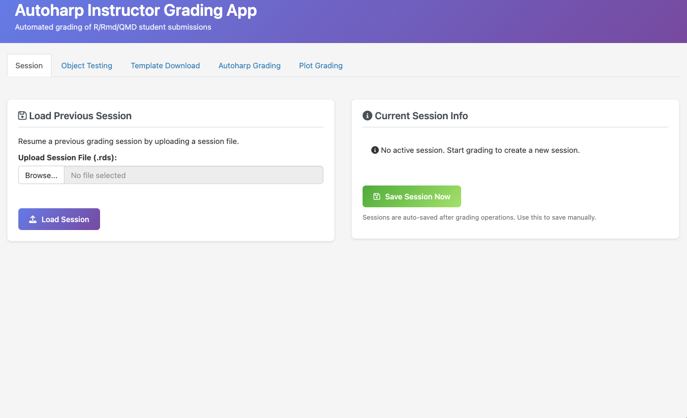
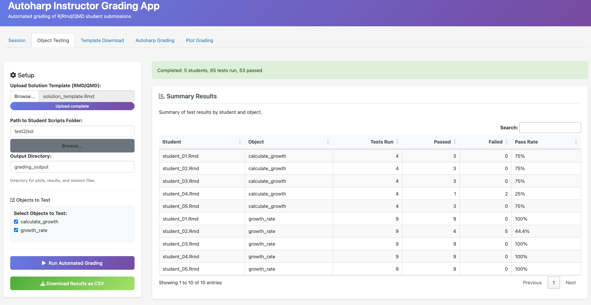
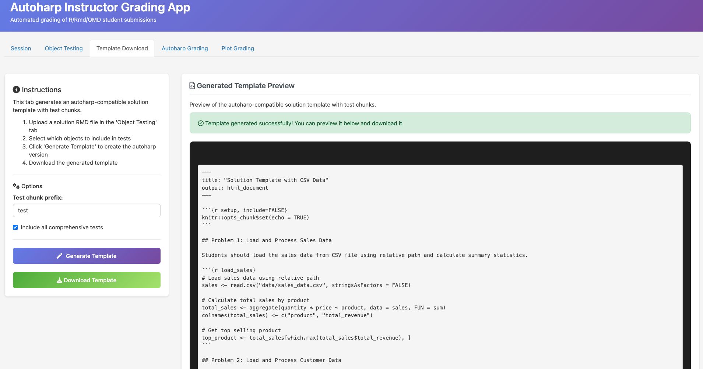
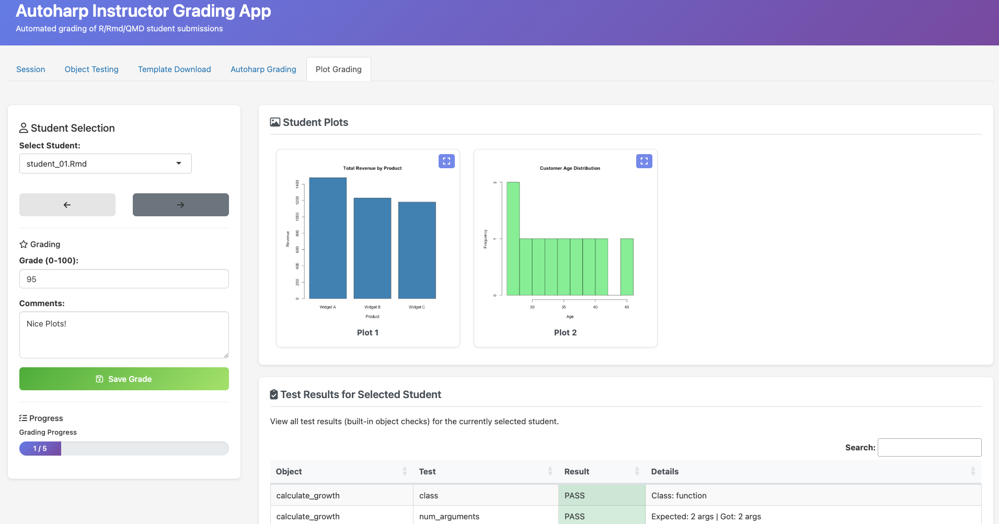

Shiny App: Grading
shiny_grading.RmdIntroduction
The grading app is an instructor-facing shiny web application that provides a
comprehensive environment for evaluating student submissions. Unlike the
similarity app, which focuses on comparing submissions to each other,
the grading app centers on assessing correctness against a solution
template. It combines automated object-level testing with manual plot
grading, session persistence for interrupted workflows, and template
generation for use with autoharp’s render_one() function.
To run the grading app locally:
library(shiny)
runApp(system.file(file.path('shiny', 'grading_app', 'app.R'),
package = 'autoharp'))The application organizes its functionality across five tabs: Session
management for saving and resuming work, Object Testing for automated
correctness checks, Template Download for generating autoharp-compatible
templates, Autoharp Grading for running render_one
workflows, and Plot Grading for manual assessment of visualizations.
Session Management
A key design principle of the grading app is workflow persistence. Grading large classes often spans multiple sessions, and losing progress due to application restarts or system interruptions can be frustrating. The Session tab addresses this by providing save and resume functionality. Sessions are stored as RDS files containing the complete application state: solution objects, student file lists, grading results, plot grades with comments, and the current position in the grading workflow. The application auto-saves after significant operations (completing automated grading, saving plot grades, finishing autoharp grading), and instructors can trigger manual saves at any time.

To resume a previous session, the instructor uploads the saved RDS file and clicks “Load Session.” The application restores all state, including input field values and the current student being graded, allowing work to continue exactly where it left off.
Automated Object Testing
The Object Testing tab implements type-aware correctness checking without requiring instructors to write test code. The instructor uploads a solution template (an R Markdown or Quarto file containing correct implementations) and specifies the folder containing student submissions. The application then executes both the solution and each student script in isolated environments, comparing the objects they produce.

The key innovation in this tab is the type-based test generation. When the solution template is executed, the application inspects each created object and determines its type. Based on this type information, it generates appropriate tests automatically.
Template Generation
While the Object Testing tab provides immediate feedback, instructors
may want to use autoharp’s full render_one() workflow for
more detailed grading. The Template Download tab bridges these
approaches by generating autoharp-compatible solution templates with
properly formatted test chunks.

The template generator works by analyzing the solution environment
and creating test chunks that mirror the automated tests from the Object
Testing tab. Each chunk includes the autoharp.objs option
(specifying which objects to extract from student code) and the
autoharp.scalars option (specifying which test results to
record). The generated code follows ’s conventions, using dot-prefixed
names for solution objects (e.g., .X for the solution’s
X object). Instructors can preview the generated template
before downloading, allowing them to verify the test structure and make
any necessary adjustments. The downloaded template can then be used
directly with populate_soln_env() and
render_one().
Autoharp Grading Integration
The Autoharp Grading tab provides a graphical interface for running
autoharp’s core grading workflow. Instead of writing R scripts to call
populate_soln_env() and render_one(),
instructors upload a template file and specify the student scripts
folder through the interface.

The tab offers several configuration options:
-
Test chunk pattern. The pattern used to identify test
chunks in the template (defaulting to “test”). This corresponds to the
patternargument ofpopulate_soln_env(). -
Permission to install packages. Whether
render_one()should automatically install packages that student scripts require but are not present on the grading machine. - Output directory. Where rendered HTML files, logs, and session files are stored.
After grading completes, results appear in a comprehensive table
showing run status (SUCCESS or FAIL), execution time, memory usage, and
all correctness check scalars defined in the template. If plot grades
have been assigned in the Plot Grading tab, they appear alongside the
automated results. The tab includes an Excel export feature that creates
a workbook with two sheets: one containing all render_one()
results and another containing plot grades and comments. This format
facilitates integration with course management systems and grade
books.
Manual Plot Grading
The Plot Grading tab addresses a challenge that automated systems cannot fully solve: evaluating the quality of data visualizations. While code correctness can be verified programmatically, assessing whether a plot effectively communicates its message requires human judgment.

When automated grading runs (either through the Object Testing tab or the Autoharp Grading tab), the application collects all plots generated by each student script. These plots are stored in a structured directory hierarchy within the output folder.
The Plot Grading interface allows instructors to navigate through students sequentially (using Previous/Next buttons or a dropdown selector), view all plots for the current student, and assign numeric grades with optional comments. Clicking a plot thumbnail opens an expanded view in a modal dialog, making it easier to examine details. The tab also displays a summary of automated test results for the current student, providing context when assessing plots. For example, if a student’s data processing produced incorrect values, this context helps explain why their visualization may look different from expectations. A progress bar tracks grading completion, and all grades are auto-saved to the session file after each entry. This combination of automated collection, easy navigation, and persistent storage streamlines what would otherwise be a tedious manual process.